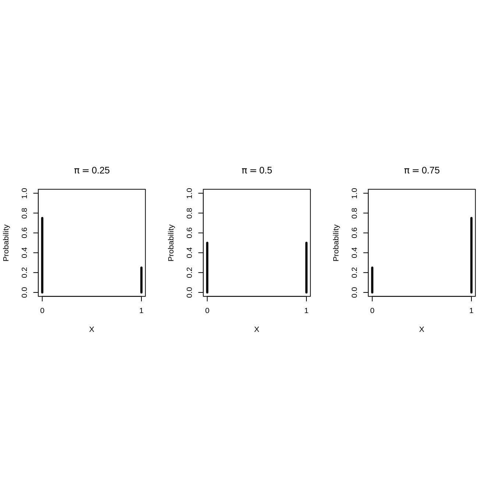
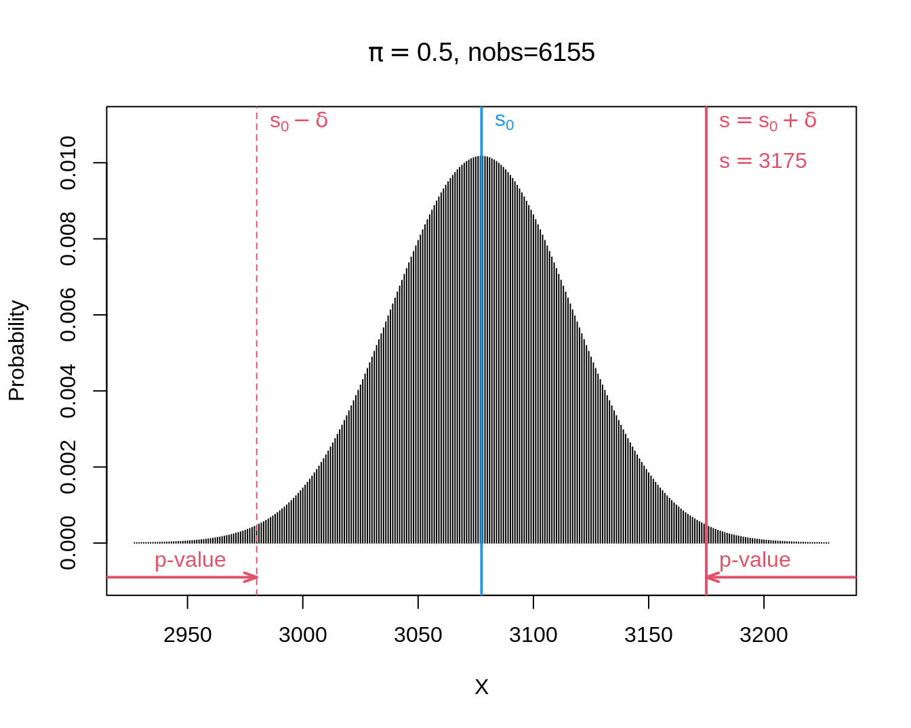
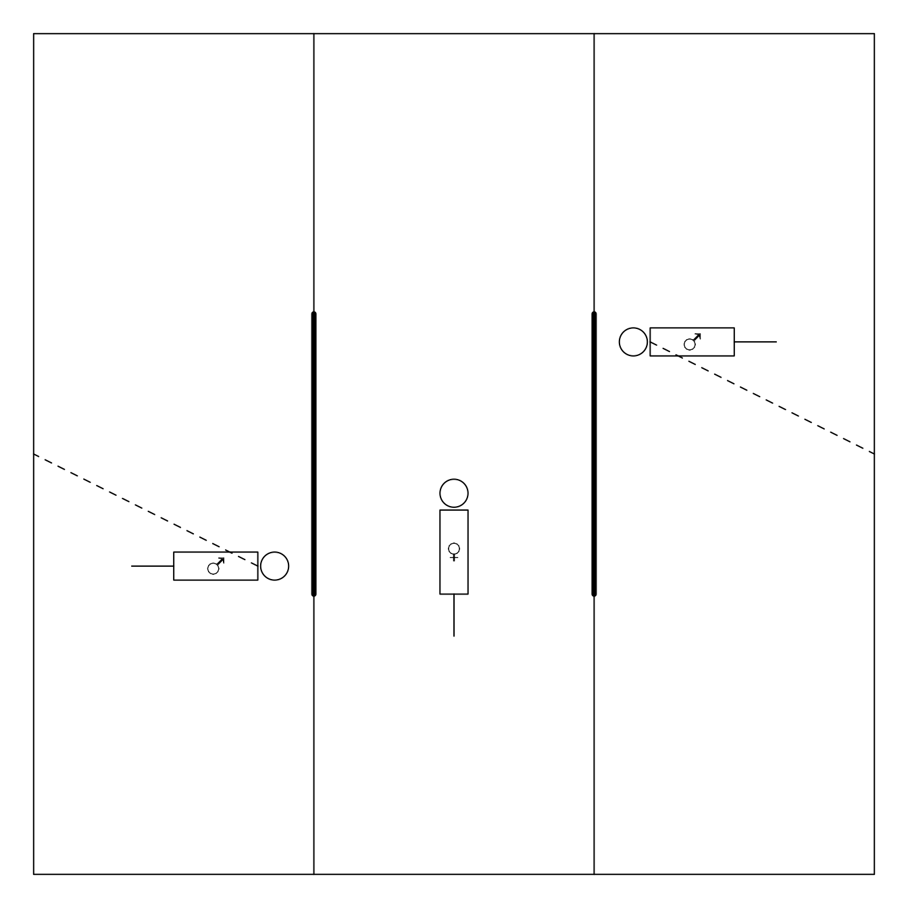
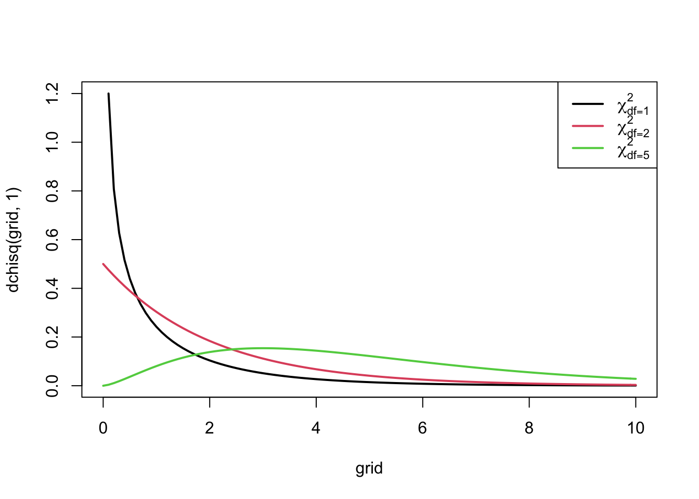

10. Categorical Data Analysis
Lieven Clement
statOmics, Ghent University (https://statomics.github.io)

library(Rmisc)
library(tidyverse)
library(NHANES)1 Introduction
Until now we used models for a continuous response in function of categorical or continuous predictor. Here we will focus on a categorical response.
- we study the association of a categorical outcome and a categorical predictor and
- touch upon methods to model a categorical outcome with a continuous response.
2 Test for a proportion
2.1 Saksen-study
- Fairly closed population (few migration)
- Probability that an unborn child is male?
boys <- 3175
n <- 6155- On 6155 unborn children 3175 boys are observed.
- Is there a difference in the probability on the gender of an unborn child?
The data are derived from a binary random variable \(X\)
- \(X=1\) for a boy and
- \(X=0\) for a girl.
Note: count problem: the outcome is a count (number of boys)
Formally we have considered a population of unborn children where each individual is characterized by a 0 or 1.
2.2 Bernoulli Probability Mass Distribution
Binary data can be modelled using a Bernoulli distribution: \[\begin{eqnarray*} X_i &\sim& B(\pi) \text{ with}\\ B(\pi)&=&\pi^{X_i}(1-\pi)^{(1-X_i)}, \end{eqnarray*}\]
It has one model parameter \(\pi\)
- Expected value of \(X_i\): \(\text{E}[X_i]=\pi,\)
- Proportion of unborn boys (children with \(X=1\)) in the population.
- Hence \(\pi\) is the probability that a random individual from the population is a boy (an observation with \(X=1\)).
The variance of Bernoulli data is also related to \(\pi\). \[\text{Var}[X_i]=\pi (1-\pi).\]
Some Bernoulli probability mass functions

- In the Saksen study 6155 observaties were sampled at random from the population.
- We can estimate \(\pi\) using the sample mean: \[\hat \pi = \bar X = \frac{\sum\limits_{i=1}^n X_i}{n},\]
pi=boys/n
pi[1] 0.5158408In our example \(\bar x =\) 3175 / 6155 = 51.6%.
2.3 Binomiale test
Is the observed probability 51.6% that an unborn child is male, sufficient evidence to conclude that there is a higher chance on a boy than on a girl?
Statistical test for \[H_0: \pi=1/2 \text{ versus } H_1: \pi\neq 1/2,\]
We need known the distribution of
- \(X\) and \(\bar X\)
- or of the sum \(S=n\bar X\).
Suppose that \(H_0:\pi=1/2\) is true (boys and girls have an equal frequency in the population)
A random individual from the population has a probability of \[P(X=1)=\pi=1/2.\] to be a boy
Two children that are drawn independently :
- Probability of \(\pi=1/2\) on a boy for the first and second child (independent from each other)
- Outcomes \((x_1, x_2)\) for both children have 4 possible combinations: \((0,0),(0,1),(1,0)\text{ en }(1,1).\)
- Each of them has a probability of \(1/4 = 1/2 \times 1/2\).
Random variable \(S\) is the sum of the outcomes :
| \((x_1,x_2)\) | \(s\) | \(P(S = s)\) |
|---|---|---|
| (0,0) | 0 | 1/4 |
| (0,1), (1,0) | 1 | 1/2 |
| (1,1) | 2 | 1/4 |
2.3.1 General: \(n\) independent samples
Probability for \(\pi\) on success (\(X=1\))
Total number of successes \(S\) (sum of all values of 1) can take \(n+1\) possible values \[S=k\text{, met }k=0,\ldots,n\]
Distribution of \(S\)? \[\begin{equation} P(S=k) = \left ( \begin{array}{c} n \\ k \\ \end{array} \right ) \pi^k (1-\pi)^{n-k} \end{equation}\]
\(1-\pi\): probability on 0 for individual observation and
binomial coefficient \[\begin{equation*} \left ( \begin{array}{c} n \\ k \\ \end{array} \right ) = \frac{n \times (n-1) \times ...\times (n-k+1) }{ k!} = \frac{ n!}{ k!(n-k)! } \end{equation*}\]
In R you can calculate the probabilities on each \(S=k\) with the function
dbinom(k,n,p)
2.3.2 Binomial Distribution
S is a:
Binomial distributed random variable with Binomial probability mass function
Parameters
- \(n\) (total number of draws from the population, is equivalent to maximal value of the outcome)
- \(\pi\) (probability on
successfor each draw).
Calculate probability on \(k\) successes on \(n\) independent draws each with a succes probability of \(\pi\).
For binary data X.
e.g.: wild type vs mutant of a gene, infected or not infected with HIV, …
Use: Compare proportions or risks on a particular event between groups.
2.3.3 Some Binomial probability mass functions.
Binomiale verdelingen.
Test statistic \[H_0:\pi=1/2\text{ vs }H_1:\pi\neq 1/2\]
- \(\bar X-1/2\) or, equivalent,
- \(\Delta=n(\bar X-\pi_0)=S-s_0\).
- Distribution of the latter test statistic can be derived immediately from the Binomial distribution:
- We observe \(s=\) 3175 and thus \(\delta=s-s_0=\) 3175 \(-\) 6155 \(\times 0.5=\) 97.5.
- When boys and girls are equally likely, i.e. under \(H_0:\pi=1/2\), we will get following two-sided p-value: \[p=\text{P}_0\left[S-s_0\geq \vert \delta\vert \right] + \text{P}_0\left[S-s_0\leq - \vert \delta\vert \right].\]
- Note, that we can rewrite it in terms of S. \[p=\text{P}_0\left[S\geq s_0+ \vert \delta\vert \right] + \text{P}_0\left[S \leq s_0 - \vert \delta\vert \right].\]
- For the Saksen study we calculate:
\[\begin{eqnarray*} \text{P}_0\left[S\geq s_0+ \vert \delta\vert \right] &=& P(S \geq 6155 \times 0.5 + \vert 3175 - 6155 \times 0.5\vert ) \\&=& P(S \geq 3175)\\ &= &P(S= 3175) + P(S=3176) + ... + P(S=6155)\\ & =& 0.0067\\\\ \text{P}_0\left[S \leq s_0 - \vert \delta\vert \right] &=& P(S \leq 6155 \times 0.5 - \vert 3175- 6155 \times 0.5\vert) \\&=& P(S \leq 2980)\\ &= &P(S=0) + ... + P(S=2980) \\ &=&0.0067 \end{eqnarray*}\]
- The Binomial distribution is symmetric for\(\pi=1/2\): \[\text{P}_0\left[S\geq s_0+ \vert \delta\vert \right] = \text{P}_0\left[S \leq s_0 - \vert \delta\vert \right]\]
- This is no longer the case when \(\pi\) deviate from 0.5.
pi0 <- 0.5; s0 <- pi0 *n
delta <- abs(boys- s0)
delta[1] 97.5sUp <- s0 + delta
sDown <- s0 -delta
c(sDown,sUp)[1] 2980 3175pUp <- 1-pbinom(sUp-1,n,pi0)
pDown <- pbinom(sDown,n,pi0)
p <- pUp+pDown
c(pUp,pDown, p)[1] 0.006699883 0.006699883 0.013399766- If \(\pi= 1/2\), the probability to observe at least \(\delta=\) 97.5 boys more or less than the mean under \(H_0: s_0=\) 3077.5 in a random sample under H_0 is only 1.34% is: \(p\)-value of binomial test.
- Very unlikely to observe such a large number of boys in a random sample when boys and girls have the same frequency in the population (under \(H_0\)).
- Hence the hypothesis that the frequency of boys and girls is the same is not supported by the data.

The test can immediately be conducted using the binomial.test function in R.
binom.test(x=boys,n=n,p=pi0)
Exact binomial test
data: boys and n
number of successes = 3175, number of trials = 6155, p-value = 0.0134
alternative hypothesis: true probability of success is not equal to 0.5
95 percent confidence interval:
0.5032696 0.5283969
sample estimates:
probability of success
0.5158408 On the 5% significance-level we conclude that there is on average a higher probability on a unborn male child than an unborn female child.
2.3.4 Confidence interval on a proportion
- Estimator of the proportion of boys in the population is the sample mean \(\hat \pi=\bar x=\) 0.516
- The standard error is \[SE_{\bar x}=\sqrt{\frac{\text{Var}[X]}{n}}=\sqrt{\frac{\pi(1-\pi)}{n}}\]
- We can estimate this based on the sample: \(SE_{\bar x}=\sqrt{\frac{\hat\pi(1-\hat\pi)}{n}}=\) 0.0064.
- 95% CI via CLT: \(\hat\pi \pm 1.96 SE_{\hat\pi}.\)
se=sqrt(pi*(1-pi)/n)
pi+c(-1,1)*qnorm(0.975)*se[1] 0.5033559 0.52832572.3.5 CI on proportion in small sample?
CI <- binom.test(x=boys,n=n,p=pi0)$conf.int
CI[1] 0.5032696 0.5283969
attr(,"conf.level")
[1] 0.952.3.6 Conclusion
Note that the test for a proportion is equivalent to a one-sample t-test for binary data.
For the Saksen population we conclude at the 5% significance level that the gender of unborn children is more likely to be male than female (\(p=\) 0.013). The probability that an unborn child is male equals 51.6% (95% CI [50.3,52.8]%).
3 Test for association between two qualitative variables
3.1 Paired observations
- 2 measurements on same individual
- e.g. before and after exposure to a chemical substance
- observe a categorical outcome before and after.
- paired binary responses
- Statistical analysis has to account for paired design.
3.1.1 Example: Females choose gentle, but not healthy or macho males in Campbell dwarf hamsters (Rogovin et al. 2017)

The gate is opened upon 3 minutes
aggressive vs non-agressive male
Each female undergoes the test twice:
- once upon stay in hostile environment (high population density, shortage of feed, a lot of competition)
- and once upon stay in gentle evironment.
| friendly_agressive | friendly_non-agressive | total | |
|---|---|---|---|
| hostile_agressive | 3 (e) | 17 (f) | 20 |
| hostile_non-agressive | 1 (g) | 13 (h) | 14 |
| total | 4 | 30 | 34 |
3.1.2 Absolute risk difference (ARD)
\(\pi_1=P[\text{agressive male } \vert \text{hostile}]\)
\(\hat \pi_1=(e+f)/n\), with \(n=e+f+g+h\).
\(\pi_0=P[\text{agressive male } \vert \text{ friendly}]\)
\(\hat \pi_0=(e+g)/n\) \[\begin{equation*} \widehat{\text{ARD}}=\hat\pi_1-\hat\pi_0=\frac{e+f}{n}-\frac{e+g}{n}=\frac{f-g}{n} \end{equation*}\]
Only affected by discordant pairs \(f\) en \(g\)
Standard error on ARD \[\begin{equation*} \text{SE}_{\widehat{\text{ARD}}}=\frac{1}{n}\sqrt{f+g-\frac{(f-g)^2}{n}} \end{equation*}\]
If we have large number of observations we can use the CLT to establish an \((1-\alpha)100\%\) CI on the ARD \[\left[\widehat{\text{ARD}}-z_{\alpha/2}\text{SE}_{\widehat{\text{ARD}}},\widehat{\text{ARD}}-z_{\alpha/2}\text{SE}_{\widehat{\text{ARD}}}\right]\] or \[\left[\frac{f-g}{n}-\frac{z_{\alpha/2}}{n}\sqrt{f+g-\frac{(f-g)^2}{n}},\frac{f-g}{n}+\frac{z_{\alpha/2}}{n}\sqrt{f+g-\frac{(f-g)^2}{n}}\right] \]
hamster <- matrix(c(3,17,1,13),ncol=2,byrow=TRUE)
rownames(hamster) <- c("hostile-agressive", "hostile-non-agressive")
colnames(hamster) <- c("friendly-agressive","friendly-non-agressive")
f=hamster[1,2]; g=hamster[2,1] ;n=sum(hamster)
riskdiff=(f-g)/n
riskdiff[1] 0.4705882se=sqrt(f+g-(f-g)^2/n)/n
se[1] 0.09517144ci<-riskdiff+c(-1,1)*qnorm(0.975)*se
ci[1] 0.2840556 0.6571208\[\begin{equation*} \widehat{\text{ARD}}=\frac{17-1}{34}=0.471 \end{equation*}\] The absolute risk difference on choosing for an agressive male is 47.1% larger upon staying in a hostile environment that when residing in a gentle environment. - The standard error \[\begin{equation*} \text{SE}_{\widehat{\text{ARD}}}=\frac{1}{34}\sqrt{17+1-\frac{(17-1)^2}{34}}=0.0952 \end{equation*}\] - A 95% confidence interval on this absolute risk difference is \[\begin{equation*} \left[0.471-1.96\times 0.0952,0.471+1.96\times 0.0952\right]=[0.284,0.658] \end{equation*}\]
3.2 McNemar test
| friendly_agressive | friendly_non-agressive | total | |
|---|---|---|---|
| hostile_agressive | 3 (e) | 17 (f) | 20 |
| hostile_non-agressive | 1 (g) | 13 (h) | 14 |
| total | 4 | 30 | 34 |
- Assess if risk on choice for agressive male differs between residing in hostile and friendly environment.
- Only discordant pairs give information.
- \(f>g\) indication against \(H_0\): choice of partner not associated with environment.
- Evaluate probability that in a random discordant pair, a female chooses an agressive male upon a stay in a hostile environment.
- We estimate the probability as \[\frac{f}{f+g}\]
\[\begin{eqnarray*} \text{E}\left[f/(f+g)\right]&\stackrel{H_0}{=}& 0.5\\ f & \stackrel{H_0}{\sim}& \text{Binom}(n=f+g,\pi=0.5)\\ \text{SE}_{\frac{f}{f+g}} & \stackrel{H_0}{=}& \sqrt{(f+g)\times 0.5\times 0.5}=\frac{\sqrt{f+g}}{2} \end{eqnarray*}\]
- Asymptotically a one-sample z-test (based on the Normal distribution)
\[\begin{equation*} z=\frac{f-(f+g)/2}{\sqrt{f+g}/2}=\frac{f-g}{\sqrt{f+g}} \end{equation*}\]
- Normal approximation is good if \[f \times g/(f+g) \geq 5\]
The Mc Nemar test is the analogon of the paired t-test for binary qualitative variables.
In R we can conduct the analysis using the mcnemar.test function
mcnemar.test(hamster)
McNemar's Chi-squared test with continuity correction
data: hamster
McNemar's chi-squared = 12.5, df = 1, p-value = 0.000407- We reject the null hypothesis at the 5% significance level
- We conclude that the choice of partner is extremely significantly associated with the environment.
- Normale approximation is not optimal and we can perform an exact test using the binomiale test
binom.test(x=f,n=f+g,p=0.5)
Exact binomial test
data: f and f + g
number of successes = 17, number of trials = 18, p-value = 0.000145
alternative hypothesis: true probability of success is not equal to 0.5
95 percent confidence interval:
0.7270564 0.9985944
sample estimates:
probability of success
0.9444444 3.2.1 Conclusion
- We conclude that the partner choice is extremely signficantly associated with the environment (\(p<0.001\)).
- The probability on choosing an agressive male is on average 47.1% higher when a female hamster resides in a hostile environment than when she resides in a friendly environment (95% CI [28.4,65.7]%).
4 Unpaired observations
4.1 Genetic association study
- Are genetic polymorphisms in the BRCA1 gene associated with breast cancer?
- Retrospective case-control study with 800 breast cancer cases en 572 controls
brca<-read_csv("https://raw.githubusercontent.com/GTPB/PSLS20/master/data/brca.csv")
head(brca)summary(brca) cancer variant variant2
Length:1372 Length:1372 Length:1372
Class :character Class :character Class :character
Mode :character Mode :character Mode :character | Genotype | Control | Cases | Total |
|---|---|---|---|
| Pro/Pro | 266 (a) | 342 (d) | 608 (a+d) |
| Pro/Leu | 250 (b) | 369 (e) | 619 (b+e) |
| Leu/Leu | 56 (c) | 89 (f) | 145 (c+f) |
| Totaal | 572 (a+b+c) | 800 (d+e+f) | 1372 (n) |
- In case-control study one chooses a fixed number of cases and controls and registers which exposures they had in the past.
- Retrospective study
- Impossible to assess risks and risk-differences on breast cancer because the proportion of cases and controls does not reflect that in the population!
| Genotype | Controls | Cases | Total |
|---|---|---|---|
| Pro/Pro | 266 (a) | 342 (d) | 608 (a+d) |
| Pro/Leu | 250 (b) | 369 (e) | 619 (b+e) |
| Leu/Leu | 56 (c) | 89 (f) | 145 (c+f) |
| Totaal | 572 (a+b+c) | 800 (d+e+f) | 1372 (n) |
- Is possible to assess probability on allel Leu/Leu
- cases: \(\pi_1=f/(d+e+f)=89/800=11.1\%\)
- controls:\(\pi_0=c/(a+b+c)=56/572=9.8\%\)
- Relative risk on exposure for cases versus controls is \(11.1/9.8=1.14\).
- The probability on the Leu/Leu genotype is 14% higher for women with breast cancer than for women without borstkanker.
- It suggests an association, but it does not let us conclude how much higher the risk is on breast cancer for women with the Leu/Leu genotype as compared to the other women.
- Other statistic?
\[\begin{equation*} Odds=\frac{p}{1-p} \end{equation*}\] with \(p\) the probability on the event.
Transformation of risk with following properties:
odds has value between 1 and \(\infty\).
odds only equals 1 for probability \(p=1/2\).
de odds increases if probability increases.
popular in gambling: how much more likely is it to win than to loose
| Genotype | Controls | Cases | Total |
|---|---|---|---|
| Pro/Pro | 266 (a) | 342 (d) | 608 (a+d) |
| Pro/Leu | 250 (b) | 369 (e) | 619 (b+e) |
| Leu/Leu | 56 (c) | 89 (f) | 145 (c+f) |
| Totaal | 572 (a+b+c) | 800 (d+e+f) | 1372 (n) |
Odds on allel Leu/Leu
Cases: \(\mbox{odds}_1=\frac{ f/(d+e+f)}{(d+e)/(d+e+f)}=f/(d+e)=89/711=0.125\). The double Leu/Leu variant is 8 times less likely than other allele combinations in the breast cancer cases
Controls: \(\mbox{odds}_2=c/(a+b)=56/516=0.109\).
Association between exposure and outcome: \[ OR_{Leu/Leu}=\frac{\mbox{odds}_T}{\mbox{odds}_C}= \frac{f/(d+e)}{c/(a+b)}=\frac{f/(d+e)}{c/(a+b)}=1.15 \]
| Genotype | Controls | Cases | Total |
|---|---|---|---|
| Pro/Pro | 266 (a) | 342 (d) | 608 (a+d) |
| Pro/Leu | 250 (b) | 369 (e) | 619 (b+e) |
| Leu/Leu | 56 (c) | 89 (f) | 145 (c+f) |
| Totaal | 572 (a+b+c) | 800 (d+e+f) | 1372 (n) |
- If the study would have been a random sample of the population (number of cases and controls not fixed by design) then we would be able to calculate the odds ratio on breast cancer for people with and without the double Leu/leu variant. \[\begin{equation*} OR_{case}=\frac{ \frac{ f}{c}}{ \frac{(d+e)}{(a+b)}} = \frac{f(a+b)}{c(d+e)}=OR_{Leu/Leu}=1.15, \end{equation*}\]
- OR is a symmetric statistic!
- OR on borstcancer can be estimated!
- The odds on borstcancer is 15% higher for women with this specific allele combination.
Is the difference large enough to generalize the effect in the sample towards the population?
We will first rewrite the data in a 2x2 table
| Genotype | Controls | Cases | Totaal |
|---|---|---|---|
| other | 516 (a) | 711 (c) | 1227 (a+c) |
| Leu/Leu | 56 (b) | 89 (d) | 145 (b+d) |
| Total | 572 (a+b) | 800 (c+d) | 1372 (n) |
4.2 Pearson Chi-square test for independent samples
Test association between categorical exposure(e.g. variant, X) en categorical response (e.g. disease, Y). \[H_0: \text{There is no association between } X \text{ and } Y \text{ vs } H_1: X \text{ and } Y \text{ are associated}\]
Consider row totals \(n_\text{other}=a+c\), \(n_\text{leu,leu}=b+d\) and
column totals \(n_\text{contr}=a+b\) en \(n_\text{case}=c+d\).
They give information on marginal distribution of the exposure (variant, X) and outcome (disease, Y), but not on the association between these variables.
Under \(H_0\) \(X\) and \(Y\) are independent and one expects that \((b+d)/n\) of the \(a+b\) controls have a Leu/Leu variant, or that \((a+b)(b+d)/n\) of them has a Leu/Leu variant
We can calculate this expected number \(E_{ij}\) under the null hypothesis for each cell of the \(2 \times 2\) table.
\(E_{11}\) = Expected number under \(H_0\) in (1,1)-cell = 1227 \(\times\) 800/1372 = 715.5 ;
\(E_{12}\) = Expected number under \(H_0\) in (1,2)-cell = 1227 \(\times\) 572/1372 = 511.5 ;
\(E_{21}\) = Expected number under \(H_0\) in (2,1)-cell = 145 \(\times\) 800/1372 = 84.55 ;
\(E_{22}\) = Expected number under \(H_0\) in (2,2)-cell = 145 \(\times\) 572/1372 = 60.45 ;
Test-statistic: \[\begin{eqnarray*} X^2 &=& \frac{\left (|O_{11} - E_{11}| - .5 \right)^2 }{ E_{11}} + \frac{ \left ( |O_{12} - E_{12}| - .5 \right)^2 }{E_{12} }+ \\ &&\quad\quad \frac{ \left ( |O_{21} - E_{21}| - .5 \right)^2 }{E_{21}}+ \frac{ \left ( |O_{22} - E_{22}| - .5 \right)^2 }{E_{22} }\\ X^2 &\stackrel{H_0}{\longrightarrow}& \chi^2(df=1) \end{eqnarray*}\]

- A large value of the test statistic gives an indication that the null hypothesis is false.
- The test will reject \(H_0\) at the \(\alpha 100\%\) significance level as soon as the observed test-statistic is larger than the \(100\%(1-\alpha)\)-quantile, \(\chi^2_{1, \alpha}\), of the \(\chi^2_1\)-distribution.
- Otherwise we do not reject \(H_0\).
- The p-value of a 2-sided test is the probability to observe a larger test-statistic in a random sample under the null than what we observed in our sample. \[p=P_0[\chi^2_1 \geq x^2]\].
expected <- matrix(0,nrow=2,ncol=2)
for (i in 1:2)
for (j in 1:2)
expected[i,j] <-
sum(brcaTab2[i,])*sum(brcaTab2[,j])/sum(brcaTab2)
expected [,1] [,2]
[1,] 715.4519 511.5481
[2,] 84.5481 60.4519x2 <- sum((abs(brcaTab2-expected) - .5)^2/expected)
1-pchisq(x2,1)[1] 0.481519- Because \(O_{ij}\) are discrete values, the \(X^2\) can only take discrete values and the continuouss \(\chi^2_1\)-distribution is only an approximation of the real distribution.
- To improve the approximation one substracts 0.5 from the value in each cell: continuity-correction
- We refer to this test as Pearson Chi-squared test with Yates correction.
- When the correction is not used (i.e. when the values of `0.5’ in the estimator \(X^2\) are replaced) we use the Pearson Chi-squared test.
In R you can switch the correction on or off by setting the argument correct on TRUE or FALSE, respectively:
chisq.test(brcaTab2)
Pearson's Chi-squared test with Yates' continuity correction
data: brcaTab2
X-squared = 0.49542, df = 1, p-value = 0.4815chisq.test(brcaTab2,correct=FALSE)
Pearson's Chi-squared test
data: brcaTab2
X-squared = 0.62871, df = 1, p-value = 0.4278- Even with the \(\chi^2_1\) correction the approximation is only valid if non of the cells has an expected count below 5 under \(H_0\).
- When the \(\chi^2\)-approximation is invalid we will use Fisher’s exact test.
- Null hypothesis is also that \(X\) and \(Y\) are independent, and, the alternative hypothesis that \(X\) and \(Y\) are dependent.
fisher.test(brcaTab2)
Fisher's Exact Test for Count Data
data: brcaTab2
p-value = 0.4764
alternative hypothesis: true odds ratio is not equal to 1
95 percent confidence interval:
0.5974269 1.2501878
sample estimates:
odds ratio
0.8670925 4.3 Extension to categorical variables with multiple levels
The \(\chi^2\)-test can also be used if one of the categorical variables \(X\) and \(Y\) has more than 2 levels
Again: the null hypothesis \(H_0\): \(X\) and \(Y\) are independent (not associated), against the alternative \(H_A: X\) and \(Y\) are associated.
Let the variable in the rows have \(r\) different possible outcomes and the one in the columns \(c\) possible outcomes, then we obtain an \(r \times c\) table.
Again we will compare the observed values in cell \((i,j)\), referred to as \(O_{ij}\), with the expected number under \(H_0\), \(E_{ij}\)
Again \(E_{ij}\) is the product of the \(i^\text{th}\) row-total and the \(j^\text{th}\) column total devided by the overall total.
\[\begin{equation*} X^2 = \sum_{ij} \frac{\left (O_{ij} - E_{ij}\right)^2 }{ E_{ij}} \end{equation*}\]
- We can show that the statistic follows a \(\chi^2\) distribution with \((r-1) \times (c-1)\) degrees of freedom under \(H_0\).
- No continuity correction
- Pearson \(\chi^2\) test is analogon of one-way ANOVA for qualitative variables.
brcaTab <- table(brca$variant,brca$cancer)
chisq.test(brcaTab)
Pearson's Chi-squared test
data: brcaTab
X-squared = 2.0551, df = 2, p-value = 0.3579- To assess if the variant of the BRCA1 gene is associated with breast cancer we conducted a Pearson \(\chi^2\)test for the \(3 \times 2\) table.
- The statistic is now 2.055 and follows a \(\chi^2\) distribution with 2 degrees of freedom under \(H_0\). The probability to obtain a \(\chi^2\)-test statistic in a random sample under \(H_0\) that is more extreme than 2.055, is 36%.
- On the 5% level of significance we conclude that the variant of the BRCA-gene is not associated with breast cancer.
5 Logistic regression
Framework to model binary data (e.g cancer vs no cancer): logistic regression model.
Model binary data with continuous and/or dummy variables.
The model assumes that observations for subject \(i=1,\ldots,n\) are independent and follow a Bernoulli distribution.
The logarithm of the odds is modelled using a linear model, also referred to as linear predictor: \[\begin{equation} \left\{ \begin{array}{ccl} Y_i&\sim&B(\pi_i)\\\\ \log \frac{\pi_i}{1-\pi_i}&=&\beta_0 + \beta_1X_{i1} + \ldots + \beta_p X_{ip} \end{array}\right. \end{equation}\]
5.1 Categorical predictor
breast cancer example: is BRCA 1 variant associated with breast cancer.
As in the Anova context, a factor in logistic regression is coded using dummy variables.
1 dummy variable less than the number of groups.
For BRCA 1 we need two dummy variables and obtain the following linear predictor:
\[\begin{eqnarray*} \log \frac{\pi_i}{1-\pi_i} &=& \beta_0+\beta_1 x_{i1} +\beta_2 x_{i2} \end{eqnarray*}\]
with : \[x_{i1} = \left\{ \begin{array}{ll} 1 & \text{ if subject $i$ is heterozygous, Pro/Leu variant} \\ 0 & \text{if subject $i$ is homozygous, (Pro/Pro or Leu/Leu variant)} \end{array}\right. .\] \[x_{i2} = \left\{ \begin{array}{ll} 1 & \text{ if subject $i$ is homozygous is the Leucine mutation: Leu/Leu } \\ 0 & \text{ of subject $i$ is not homozygous in the Leu/Leu variant} \end{array}\right. .\]
Homozygosity in the wild type allele Pro/Pro is the reference group.
We fit the model in R.
- Note that we use the function
as.factorto convert the cancer variable to a factor variable. - We further use the functionrelevelto specify the control treatment as the reference group.
brca$cancer<-brca$cancer %>% as.factor %>% relevel("control")
brca$variant<-brca$variant %>% as.factor %>% relevel("pro/pro")
brcaLogit <- glm(cancer~variant,data=brca,family=binomial)
summary(brcaLogit)
Call:
glm(formula = cancer ~ variant, family = binomial, data = brca)
Deviance Residuals:
Min 1Q Median 3Q Max
-1.379 -1.286 1.017 1.017 1.073
Coefficients:
Estimate Std. Error z value Pr(>|z|)
(Intercept) 0.25131 0.08175 3.074 0.00211 **
variantleu/leu 0.21197 0.18915 1.121 0.26243
variantpro/leu 0.13802 0.11573 1.193 0.23302
---
Signif. codes: 0 '***' 0.001 '**' 0.01 '*' 0.05 '.' 0.1 ' ' 1
(Dispersion parameter for binomial family taken to be 1)
Null deviance: 1863.9 on 1371 degrees of freedom
Residual deviance: 1861.9 on 1369 degrees of freedom
AIC: 1867.9
Number of Fisher Scoring iterations: 4The intercept is the log-odds on cancer in the reference class (Pro/Pro) and the slope terms are log odds ratios between treatment and reference class: \[\begin{eqnarray*} \log \text{ODDS}_\text{Pro/Pro}&=&\beta_0\\\\ \log \text{ODDS}_\text{Pro/Leu}&=&\beta_0+\beta_1\\\\ \log \text{ODDS}_\text{Leu/Leu}&=&\beta_0+\beta_2\\\\ \log \frac{\text{ODDS}_\text{Pro/Leu}}{\text{ODDS}_\text{Pro/Pro}}&=&\log \text{ODDS}_\text{Pro/Leu}-\log ODDS_{Pro/Pro}\\ &=&\beta_0+\beta_1-\beta_0=\beta_1\\\\ \log \frac{\text{ODDS}_\text{Leu/Leu}}{\text{ODDS}_\text{Pro/Pro}}&=&\beta_2 \end{eqnarray*}\]
- The analysis allows us to interpret the result immediately in oddses and odds ratios!
anova(brcaLogit,test="Chisq")The \(\chi^2\)-test on the logsitic regression model also indicates that there is no significant association between cancer status and the genetic variant of the BRCA gene (\(p=\) 0.358). De p-value is almost equivalent to the one of the \(\chi^2\)-test (see previous section).
Significant association?
- Post-hoc tests to evaluate which of the odds ratios are different from 1.
- For BRCA1 example we did not reject the omnibus hypothesis so no post-hoc analysis
- For your reference we include the post hoc analysis so that you would have the code.
suppressPackageStartupMessages({library(multcomp)})
posthoc <- glht(brcaLogit,linfct=mcp(variant = "Tukey"))
posthocTests <- summary(posthoc)
posthocTests
Simultaneous Tests for General Linear Hypotheses
Multiple Comparisons of Means: Tukey Contrasts
Fit: glm(formula = cancer ~ variant, family = binomial, data = brca)
Linear Hypotheses:
Estimate Std. Error z value Pr(>|z|)
leu/leu - pro/pro == 0 0.21197 0.18915 1.121 0.493
pro/leu - pro/pro == 0 0.13802 0.11573 1.193 0.449
pro/leu - leu/leu == 0 -0.07395 0.18922 -0.391 0.917
(Adjusted p values reported -- single-step method)posthocCI <- confint(posthoc)
posthocCI
Simultaneous Confidence Intervals
Multiple Comparisons of Means: Tukey Contrasts
Fit: glm(formula = cancer ~ variant, family = binomial, data = brca)
Quantile = 2.3257
95% family-wise confidence level
Linear Hypotheses:
Estimate lwr upr
leu/leu - pro/pro == 0 0.21197 -0.22792 0.65186
pro/leu - pro/pro == 0 0.13802 -0.13113 0.40717
pro/leu - leu/leu == 0 -0.07395 -0.51401 0.36611- With the
confintfunction CI are obtained on the log-odds ratios corrected for multiple testing.
- CI’s can be backtransformed to odds ratios:
OR <- exp(posthocCI$confint)
OR Estimate lwr upr
leu/leu - pro/pro 1.2361111 0.7961856 1.919114
pro/leu - pro/pro 1.1480000 0.8771051 1.502561
pro/leu - leu/leu 0.9287191 0.5980948 1.442111
attr(,"conf.level")
[1] 0.95
attr(,"calpha")
[1] 2.325672De odds ratios that we obtain is exactly equal to the one we calculated based on the contingency table:
e.g \(\text{OR}_\text{Leu/Leu-Pro/Pro}=89\times 266/(56\times 342)=\) 1.236.
Note, that statistical inference for logistic regression relies on asymptotic theory.
5.2 Continuous Predictor
- Toxicolocal effect of carbon disulfite (CS\(_2\)) on beetles.
- Research hypothesis is there an effect of the CS\(_2\) concentration on the mortality of beetles?
Design:
- 32 independent experiments
- Each time 1 beatle is exposed to one of 8 CS\(_2\) concentrations (mg/l).
- The outcome: mortality (\(y=1\)) or survival (\(y=0\)).
beetles<-read_csv("https://raw.githubusercontent.com/GTPB/PSLS20/master/data/beetles.csv")
head(beetles)table(beetles$dose,beetles$status)
0 1
169.07 3 1
172.42 3 1
175.52 3 1
178.42 2 2
181.13 1 3
183.69 0 4
186.1 0 4
188.39 0 4We build a model for the log odds in function of the dose \(x_i\): \[\log \frac{\pi_i}{1-\pi_i}=\beta_0+\beta_1 \times x_i.\]
beatleModel<-glm(status~dose,data=beetles,family=binomial)
summary(beatleModel)
Call:
glm(formula = status ~ dose, family = binomial, data = beetles)
Deviance Residuals:
Min 1Q Median 3Q Max
-1.7943 -0.7136 0.2825 0.5177 2.1670
Coefficients:
Estimate Std. Error z value Pr(>|z|)
(Intercept) -53.1928 18.0046 -2.954 0.00313 **
dose 0.3013 0.1014 2.972 0.00296 **
---
Signif. codes: 0 '***' 0.001 '**' 0.01 '*' 0.05 '.' 0.1 ' ' 1
(Dispersion parameter for binomial family taken to be 1)
Null deviance: 42.340 on 31 degrees of freedom
Residual deviance: 26.796 on 30 degrees of freedom
AIC: 30.796
Number of Fisher Scoring iterations: 5Intercept has an interpretation of a log odds on mortality when no \(\text{CS}_2\) gas is applied.
Very small odds on mortality (\(\pi/(1-\pi)=\exp(-53.2)\)) so the probability is almost 0.
Note that this is a very large extrapolation: minimum dose in dataset is 169.07 mg/l.
Estimated odds ratio for the effect of dose on the mortality probability is \(\exp(0.3013)=1.35\).
So a beatle exposed to a CS\(_2\) concentration that is 1 mg/l larger than another beatle, will on average have an odds ratio on mortality of \(1.35\).
- We conclude that this effect is very significant (\(p=\) 0.003).
- Increasing the CS\(_2\) dose increases the mortality.
beetlesTab<-table(beetles) %>% data.frame
data.frame(grid=seq(min(beetles$dose),max(beetles$dose),.1)) %>%
mutate(piHat=predict(beatleModel,
newdata=data.frame(dose=grid),
type="response")) %>%
ggplot(aes(grid,piHat))+
geom_line() +
xlab("dose") +
ylab("probability (dead)") +
geom_text(aes(x=dose%>%as.character%>%as.double,y=status%>%as.character%>%as.double,label=Freq),beetlesTab%>%filter(status==0)) +
geom_text(aes(x=dose%>%as.character%>%as.double,y=status%>%as.character%>%as.double,label=Freq),beetlesTab%>%filter(status==1))